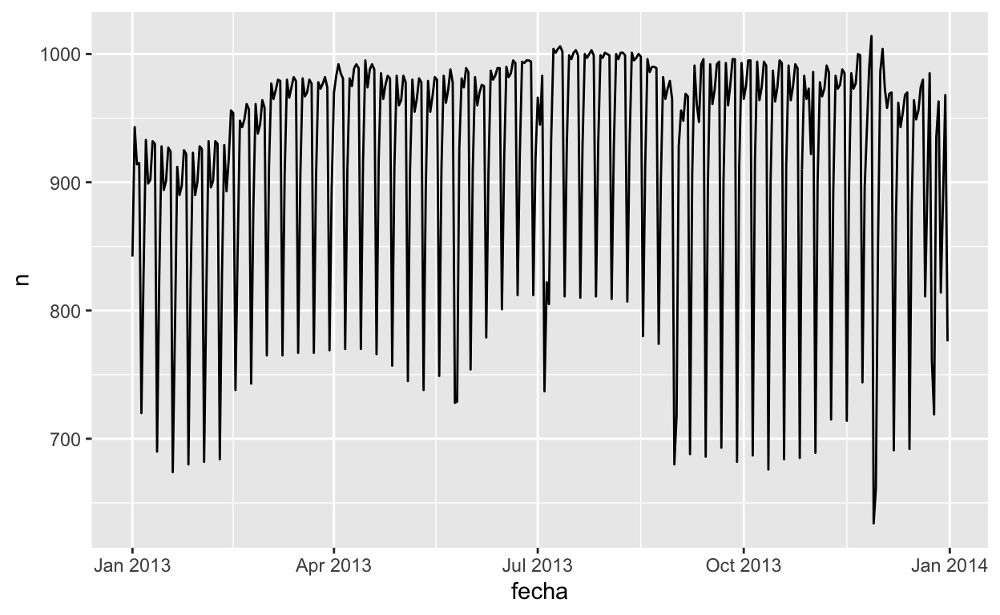

24.2.3
- En el gráfico de
log_quilatesvs.log_precio, hay unas tiras verticales brillantes. ¿Qué representan?

- Si
log(precio) = a_0 + a_1 * log(quilates), ¿Qué dice eso acerca la relación entreprecioyquilates?
R/
\[\log(precio) = a_0 + a_1 \times \log(quilates)\] \[e ^ {\log(precio)} = e ^ {a_0 + a_1 \times \log(quilates)}\]
\[precio = e ^ {a_0} \times e ^ {a_1 \times \log(quilates)}\]
- Extrae los diamantes que tienen residuos muy altos y muy bajos. ¿Hay algo inusual en estos diamantes? ¿Son particularmente malos o buenos?, o ¿Crees que estos son errores de precio?
- ¿El modelo final,
mod_diamantes2, hace un buen trabajo al predecir el precios de los diamantes? ¿Confiarías en lo que te indique gastar si fueras a comprar un diamante?
24.3.5

- Usa tus habilidades detestivescas con los buscadores para intercambiar ideas sobre por qué hubo menos vuelos esperados el 20 de enero, 26 de mayo y 1 de septiembre. (Pista: todos tienen la misma explicación.) ¿Cómo generalizarías esos días a otros años?
R/
- 20 de enero: Domingo antes del feriado Martin Luther King Day
En general este feriado ocurre el 3cer lunes de Enero.
- 26 de mayo: Domingo antes del feriado Memorial Day
En general este feriado ocurre el último lunes de Mayo.
- 1 de septiembre: Domingo antes del feriado Labor Day
En general este feriado ocurre el 1er lunes de Septiembre.
- ¿Qué representan esos tres días con altos residuos positivos? ¿Cómo se generalizarían esos días a otros años?
R/
2013-11-30: Sábado después de Acción de Gracias (2013-11-28).
2013-12-01: Lunes después de Acción de Gracias (2013-11-28).
2013-12-28: Sábado después de Navidad.
- Crea una nueva variable que divida la variable
dia_semanaen periodos, pero sólo para sábados, es decir, debería tenerThu,Fri, ySat-verano,Sat-primavera,Sat-otonio. ¿Cómo este modelo se compara con el modelo que tiene la combinación dedia_semanaytrimestre?
vuelos_por_dia <- vuelos_por_dia %>%
mutate(dia_semana2 = case_when(dia_semana == "Sat" & trimestre == "verano" ~ "Sat-verano",
dia_semana == "Sat" & trimestre == "primavera" ~ "Sat-primavera",
dia_semana == "Sat" & trimestre == "otonio" ~ "Sat-otonio",
TRUE ~ as.character(dia_semana)))
vuelos_por_dia
mod2 <- lm(n ~ dia_semana * trimestre, data = vuelos_por_dia)
mod3 <- lm(n ~ dia_semana2, data = vuelos_por_dia)
vuelos_por_dia %>%
gather_residuals(sab_trimestre = mod3, con_trimestre = mod2) %>%
ggplot(aes(fecha, resid, colour = model)) +
geom_line(alpha = 0.75)- Crea una nueva variable
dia_semanaque combina el día de la semana, periodos (para sábados), y feriados públicos. ¿Cómo se ven los residuos de este modelo?
R/
Feriados federales (2013): https://www.calendarpedia.com/holidays/federal-holidays-2013.htmlferiados_2013 <-
tribble(
~feriado, ~fecha,
"Anio Nuevo", "2013-01-01",
"Dia de Martin Luther King Jr", "2013-01-21",
"Dia de los Presidentes", "2013-02-18",
"Dia Memorial", "2013-05-27",
"Dia de la Independencia", "2013-07-04",
"Dia del Trabajador ", "2013-09-02",
"Dia de (Cristobal) Colon", "2013-10-28",
"Dia de los Veteranos (de Guerra)", "2013-11-11",
"Dia de Accion de Gracias", "2013-11-28",
"Navidad", "2013-12-25"
) %>%
mutate(fecha = lubridate::ymd(fecha))
vuelos_por_dia <- vuelos_por_dia %>%
mutate(dia_semana2 = case_when(dia_semana == "Sat" & trimestre == "verano" ~ "Sat-verano",
dia_semana == "Sat" & trimestre == "primavera" ~ "Sat-primavera",
dia_semana == "Sat" & trimestre == "otonio" ~ "Sat-otonio",
TRUE ~ as.character(dia_semana))) %>%
mutate(dia_semana3 = case_when(fecha %in% feriados_2013$fecha ~ "Feriado",
TRUE ~ as.character(dia_semana2)))
vuelos_por_dia
mod2 <- lm(n ~ dia_semana * trimestre, data = vuelos_por_dia)
mod3 <- lm(n ~ dia_semana2, data = vuelos_por_dia)
mod4 <- lm(n ~ dia_semana3, data = vuelos_por_dia)
vuelos_por_dia %>%
# gather_residuals(con_feriados = mod4, sab_trimestre = mod3) %>%
spread_residuals(con_feriados = mod4, sab_trimestre = mod3) %>%
mutate(resid_diff = con_feriados - sab_trimestre) %>%
# ggplot(aes(fecha, resid, colour = model)) +
ggplot(aes(fecha, resid_diff)) +
geom_line(alpha = 0.75)- ¿Qué sucede si ajustas un efecto de día de la semana que varía según el mes o varía mes a mes (es decir,
n ~ dia_semana * mes)? ¿Por qué esto no es muy útil?
vuelos_por_dia <- vuelos_por_dia %>%
mutate(mes = lubridate::month(fecha))
mod5 <- lm(n ~ dia_semana * mes, data = vuelos_por_dia)
summary(mod5)- ¿Que esperarías del modelo
n ~ dia_semana + ns(fecha, 5)? Sabiendo lo que sabes sobre los datos, ¿porqué esperarias que no sea particularmente efectivo?
mod6 <- lm(n ~ dia_semana + ns(fecha, 5), data = vuelos_por_dia)
summary(mod6)- Presumimos que las personas que salen los domingos son probablemente viajeros de negocios quienes necesitan estar en algun lugar el lunes. Explora esa hipótesis al ver cómo se descompone en función de la distancia y tiempo: si es verdad, esperarías ver más vuelos en la tarde del domingo a lugares que estan muy lejos.
- Es un poco frustante que el domingo y sábado esté en los extremos opuestos del gráfico. Escribe una pequeña función para establecer los niveles del factor para que la semana comience el lunes.